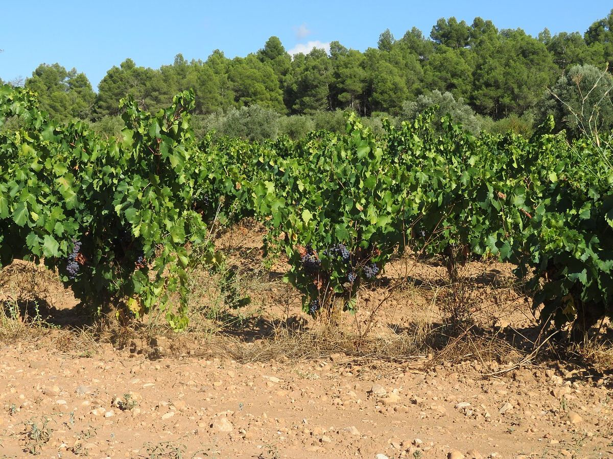

Terra Alta
Terra Alta es una denominación de origen del extremo occidental de la provincia de Tarragona, en torno a Gandesa. Es especialmente conocida por sus blancos de Garnacha Blanca, aunque elabora también tintos de Garnacha y Cariñena y vinos rancios y dulces tradicionales.

Historia
La viticultura en la Terra Alta tiene una larga tradición, ligada en la Edad Media a las órdenes militares, como la del Temple, que poseyeron tierras en la comarca. A comienzos del siglo XX el movimiento cooperativo impulsó la construcción de grandes bodegas, entre ellas las de Gandesa y El Pinell de Brai, proyectadas por el arquitecto Cèsar Martinell y conocidas como «catedrales del vino» por su arquitectura modernista. La comarca fue escenario en 1938 de la batalla del Ebro, que dejó una profunda huella en sus pueblos. Durante buena parte del siglo XX la producción se destinó al granel; en las últimas décadas, el embotellado propio y la apuesta por la Garnacha Blanca han dado a la zona una identidad definida.
Territorio y clima
La denominación ocupa una meseta elevada y accidentada en el extremo occidental de Cataluña, junto al límite con Aragón, entre el valle del Ebro y las sierras de Pàndols y Cavalls. Incluye municipios como Gandesa, Batea, Corbera d'Ebre, Vilalba dels Arcs, Horta de Sant Joan y El Pinell de Brai. El clima es mediterráneo con marcada influencia continental: veranos calurosos y secos, inviernos fríos y escasas precipitaciones. Dos vientos caracterizan la zona: el cierzo, seco y frío, del noroeste, y el garbí, más húmedo, que llega del mar desde el sur y modera las temperaturas en verano.
Suelos
Predominan los suelos calcáreos, pobres en materia orgánica, de textura variable, con zonas arcillosas y otras más arenosas. Su escasa fertilidad, unida a la sequía estival, limita los rendimientos.
Variedades y estilos
La Garnacha Blanca es la variedad más representativa de la comarca. Da blancos de cuerpo medio o amplio, aromas de fruta blanca, flores y hierbas mediterráneas, y una textura untuosa, aptos tanto para consumirse jóvenes como para fermentar o criarse en barrica. Se cultivan también Macabeo, Parellada, Moscatel y Chardonnay. Entre las tintas destacan la Garnacha, la Garnacha Peluda, la Cariñena, la Tempranillo, la Syrah, la Cabernet Sauvignon y la Merlot. Además de blancos, tintos y rosados, la tradición local incluye vinos rancios, de crianza oxidativa, y mistelas.
Paisaje
El paisaje de la Terra Alta combina viñedos con olivos y almendros sobre terrenos ondulados, rodeados de sierras. Las bodegas modernistas, los restos de la guerra civil y los pueblos de piedra forman parte de un patrimonio que se ha integrado en el enoturismo de la comarca.